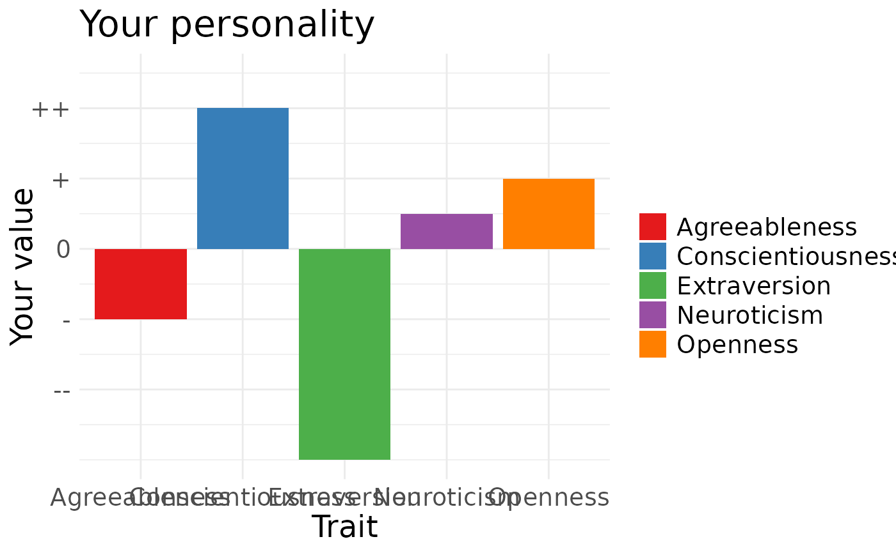
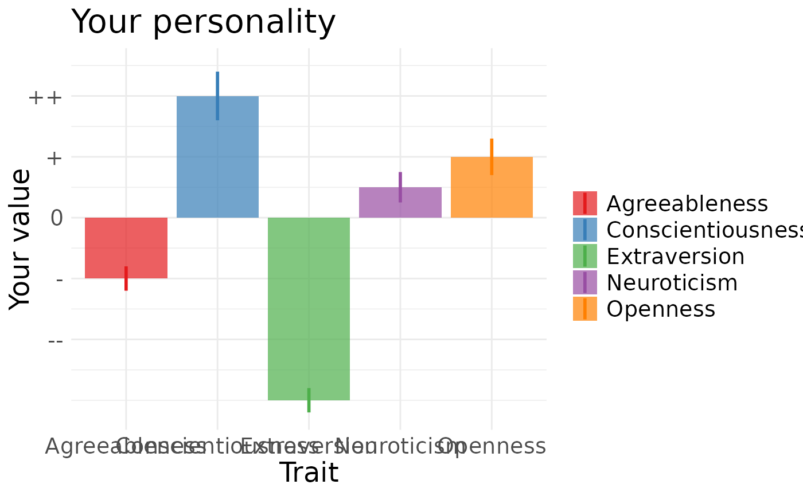

Plot normed values as a barchart
qplot_on_bar.RdPass in a data.frame with z-standardised values (x - Mean)/SD, and variable names, get a bar chart. Getting your data.frame into this shape probably will mean using tidyr and dplyr If the data.frame has an se column or ymax/ymin columns, these will be displayed on top of the bars and the bars will become transparent.
Usage
qplot_on_bar(
normed_data,
ylab = "Your value",
xlab = "Trait",
title = "",
y_ticks = c("--", "-", "0", "+", "++")
)Arguments
- normed_data
a dataset with a value column containing z-standardised value and a variable column containing labels for those values
- ylab
Y-axis label, defaults to "Percentage of other people with this value"
- xlab
X-axis label, empty by default, useful for labeling the plotted trait
- title
Plot title
- y_ticks
the ticks labels for -2,1,0,1 and 2 SDs around the mean, default to minuses, pluses and the average sign
Examples
normed_data = data.frame(variable = c("Extraversion","Openness",
"Agreeableness","Neuroticism","Conscientiousness"),
value = c(-3,1,-1,0.5,2)) # standardise value
qplot_on_bar(normed_data, title = "Your personality")

normed_data = data.frame(variable = c("Extraversion","Openness",
"Agreeableness","Neuroticism","Conscientiousness"),
value = c(-3,1,-1,0.5,2), se = c(0.2,0.3,0.2,0.25,0.4)) # standardise value
qplot_on_bar(normed_data, title = "Your personality")
